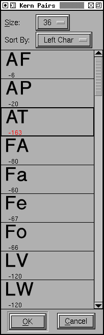

The Kerning Pairs dialog¶
This dialog either displays all kerning pairs in the entire font, or all kerning pairs associated with a character (if it is invoked from the outline view).
You may choose at what pixel size to view the pairs. Each pair is drawn kerned so you can see at a glance those that are too close. Underneath the pair is the kerning offset.
You may change the kerning by moving the mouse to the right hand character of a pair, depressing the button and moving the character around. The display is updated as you move it. All kern offsets that have been changed will be displayed in red (in the example at right, the “AT” pair has been changed).
You may select a kern pair by clicking on them. Once a selection has been made you may use the up and down arrows to step to the next or previous pair. For more accurate positioning you may alter the kerning by using the left or right arrows, each alters the kerning by one unit (if you hold down the shift or control keys and use the arrows the kerning is altered by 10 units).
You may double click on a kern pair to get the Kern Pair Closeup dlg.
You may undo the last change by pressing ^Z. You may revert the currently selected pair to its original value by pressing Meta-Z (Alt-Z).
You may control the order in which the kerning pairs are displayed, they may be sorted by:
The left hand character first and the right hand character second
The right hand character first and the left hand character second
The (absolute value of the) kerning offset
If you type a character (or use F12 to get characters you can’t type), then the dlg will scroll to display the pairs associated with that character. The behavior depends in an obvious way on how the dlg is sorted.